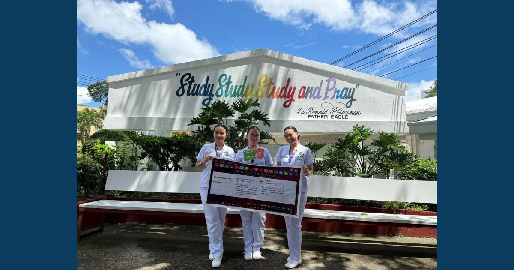

Pharmacy Research with Purpose: Every Study, a Goal and an Impact

BS Pharmacy students presented and defended their research proposals on September 17–18, 2026, at the Research Office. Beyond demonstrating their knowledge and research competence, the students identified how their proposed studies contribute to specific Sustainable Development Goals through the SDG Research Snap, one of the activities under SDG SPOT @ RDC.
Read full article